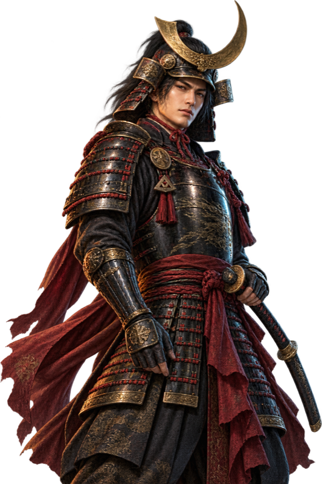

SORTIE COMMAND
いざ、出陣。
準備した一通を、あなたの手で届ける。
- Macアプリを起動
- 入力内容を確認
- 送信はゴトウが実行
Notion・司令室どちらからでも、同じ出陣先をMacへ渡します。
この画面は起動専用です。送信・Notionの更新は行いません。
起動後の入力・送信結果は、Mac側の画面で確認してください。

準備した一通を、あなたの手で届ける。
Notion・司令室どちらからでも、同じ出陣先をMacへ渡します。
この画面は起動専用です。送信・Notionの更新は行いません。
起動後の入力・送信結果は、Mac側の画面で確認してください。